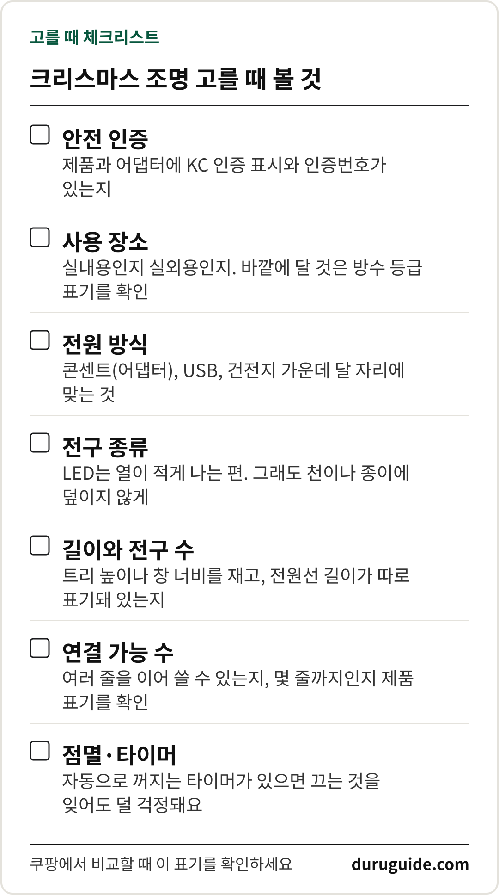

크리스마스 조명 고를 때 볼 것, 실내·실외 표기와 전기 안전
안 사도 되는 경우
작년 조명의 전선 피복과 플러그가 멀쩡하고, 건전지를 바꾸거나 연결부를 다시 끼워서 다 켜지면 올해도 그대로 써도 돼요.
이런 상황이죠
연말이 다가오면 트리나 창가에 조명을 달고 싶어져요. 그런데 막상 찾아보면 줄 조명, 커튼 조명, 건전지식, USB식처럼 종류가 많고, 베란다나 현관 밖에 달아도 되는지, 밤새 켜 둬도 괜찮은지 헷갈리기 쉬워요. 작년에 쓰던 조명을 꺼냈더니 절반만 켜지는 경우도 흔하지요.
왜 생기나
장식 조명은 가는 전선에 작은 전구가 여러 개 이어진 구조예요. 접어서 보관하는 동안 전선이 꺾이거나 피복이 눌려 일부 구간이 안 켜지는 일이 생겨요. 또 실내용으로 만든 제품을 비나 눈이 닿는 곳에 달면 연결부에 물기가 들어가 고장이나 누전으로 이어질 수 있어요. 한 콘센트에 조명을 여러 줄 이어 꽂는 것도 과열의 원인이 돼요. 그래서 조명은 모양보다 먼저 쓸 곳과 전원 방식을 정하는 게 순서예요.
사기 전에 먼저 해볼 것
- 작년 조명부터 점검해요. 전선을 끝까지 펴서 피복이 벗겨지거나 눌린 곳, 플러그가 휜 곳이 없는지 봐요. 멀쩡하면 올해도 그대로 써도 돼요.
- 일부만 안 켜지면 연결부를 확인해요. 줄과 줄을 잇는 커넥터가 덜 끼워졌거나 건전지가 약해서 생기는 경우가 많아요. 건전지를 새것으로 바꿔 보세요.
- 달 자리의 콘센트를 봐요. 콘센트가 멀면 전선이 바닥을 가로질러 발에 걸려요. 자리를 먼저 정하고 필요한 길이를 재 두세요.
- 피복이 상한 조명은 버려요. 테이프로 감아 쓰는 것은 권하지 않아요. 이 경우에는 새로 사는 편이 안전해요.
고를 때 체크리스트
| 확인 항목 | 보는 기준 |
|---|---|
| 안전 인증 | 제품과 어댑터에 KC 인증 표시와 인증번호가 있는지 |
| 사용 장소 | 실내용인지 실외용인지. 바깥에 달 것은 방수 등급 표기를 확인 |
| 전원 방식 | 콘센트(어댑터), USB, 건전지 가운데 달 자리에 맞는 것 |
| 전구 종류 | LED는 열이 적게 나는 편. 그래도 천이나 종이에 덮이지 않게 |
| 길이와 전구 수 | 트리 높이나 창 너비를 재고, 전원선 길이가 따로 표기돼 있는지 |
| 연결 가능 수 | 여러 줄을 이어 쓸 수 있는지, 몇 줄까지인지 제품 표기를 확인 |
| 점멸·타이머 | 자동으로 꺼지는 타이머가 있으면 끄는 것을 잊어도 덜 걱정돼요 |
바깥에 달 때는 조명만이 아니라 어댑터와 연결부도 물에 닿지 않아야 해요. 조명 줄은 실외용이어도 어댑터는 실내용인 제품이 있으니 표기를 따로 확인하세요.
이런 분께는 맞지 않아요
- 콘센트가 없는 자리에 오래 켜 두려는 분께 건전지식은 교체가 잦아 번거로울 수 있어요.
- 아이나 반려동물이 전선을 물거나 당길 수 있는 집이라면 손이 닿는 높이에 줄 조명을 두는 것은 맞지 않아요.
쓸 때 주의하세요
잠잘 때와 집을 비울 때는 조명을 꺼 주세요. 멀티탭 하나에 조명과 난방기구를 함께 꽂지 말고, 전선을 문틈이나 창틀에 끼워 누르지 마세요. 전선이나 어댑터가 뜨겁거나 타는 냄새가 나면 바로 플러그를 뽑고 사용을 멈추세요. 트리 주변에는 커튼, 종이 장식처럼 불이 붙기 쉬운 것이 조명에 바로 닿지 않게 간격을 두세요.
추천 제품 찾기
먼저 달 곳이 실내인지 실외인지, 콘센트가 가까운지부터 정하세요. 그다음 쿠팡에서 KC 인증 표시, 실내·실외 구분과 방수 등급, 전원 방식, 전체 길이와 전원선 길이, 타이머 유무를 비교해 보세요. 현재 가격은 쿠팡에서 확인해 주세요.

위 표의 표기를 비교해 보세요.
현재 가격은 쿠팡에서 확인해 주세요.
이 포스팅은 쿠팡 파트너스 활동의 일환으로, 이에 따른 일정액의 수수료를 제공받습니다.